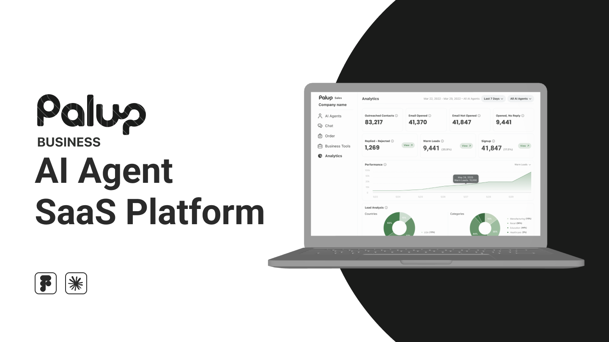
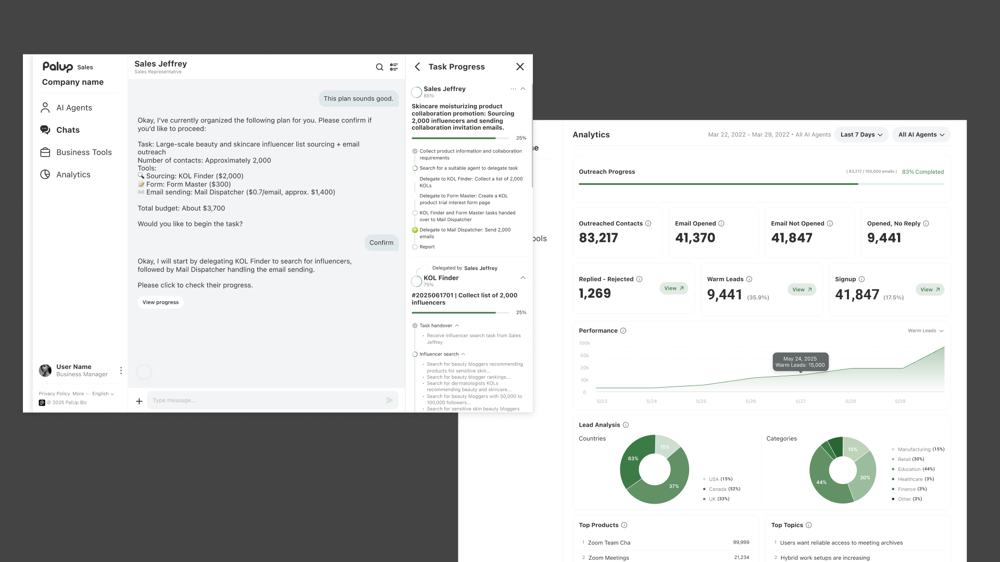
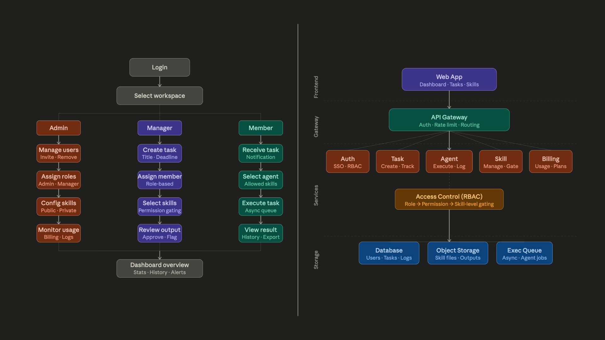
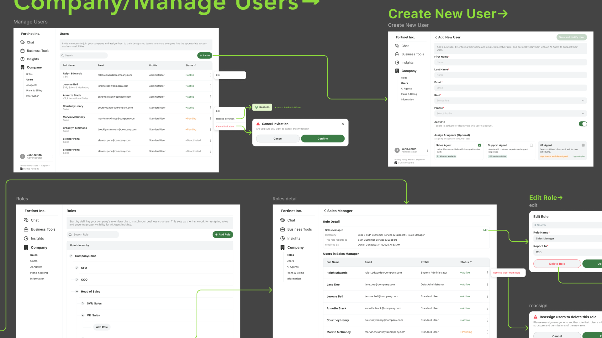
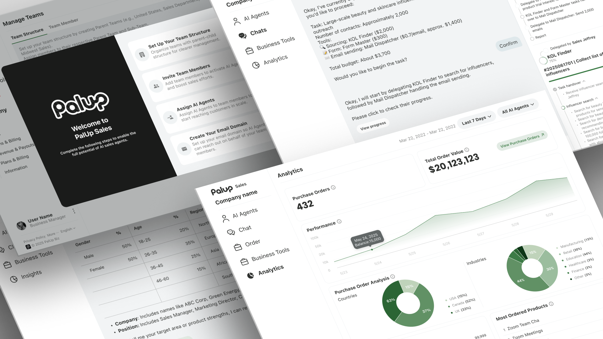

This is a backend / internal-tool project. The content is protected — enter the password to view. Available on request.
Wrong password — please try again.
← Back to works
Case Study — 05
PalUp is a B2B SaaS platform where companies deploy AI agents to work alongside their sales teams. A salesperson briefs an agent on their target audience and pricing; the agent sources matching prospects, reaches out over email, and hands warm leads back to a human the moment they're ready to talk.
01 — How It Works
A salesperson talks to an AI agent in plain language — target audience, price points, goals. The agent breaks the work into sub-tasks (sourcing, forms, email sending), runs the outreach at scale, and exchanges emails with prospects. When it detects genuine interest, it routes the qualified lead back to a human to close. The same shell is built to host future agents for HR, marketing, and beyond.

02 — Challenge
This was a 0→1 build. The idea of an "AI sales agent" was new, and the requirements were ambiguous. There was no existing pattern to copy — every screen had to be reasoned from how the work would actually happen.
03 — Process
I worked backwards from hypothetical usage scenarios — walking through each step a user and an agent would take — to pin down exactly which interface and flow each moment required. That turned a vague brief into a concrete information architecture: role-based flows for Admin, Manager and Member, an RBAC permission model, and a system structure ready to scale. A shared design system kept everything consistent as the surface grew.


04 — The Product
From onboarding and team setup to briefing an agent, tracking tasks live, and an analytics view of every outreach — the platform covers the full loop a sales team needs.

05 — Where It Stands
PalUp is pre-MVP, currently at the demo stage. The end-to-end flow — brief, outreach, qualification, handoff — is designed and prototyped, and the IA and design system are built to extend to the next wave of agents in HR and marketing.